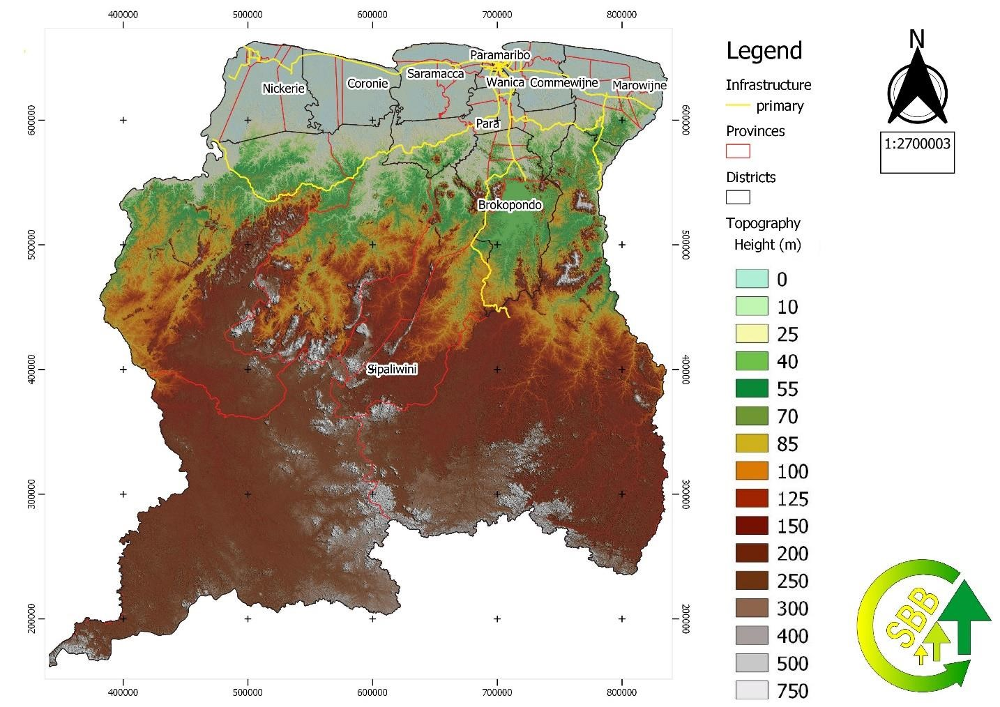
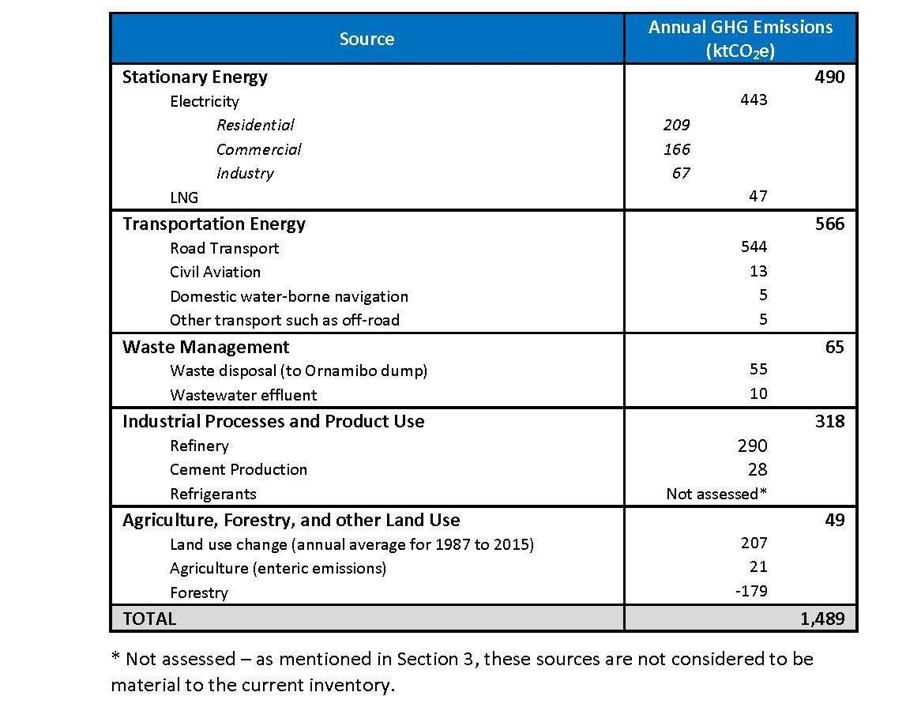

The Republic of Suriname
Submitted December 2019 in fulfilment of obligations under the Paris Agreement on climate change
The Republic of Suriname is committed to the full, effective, and transparent implementation of the Paris Agreement and has deposited its instrument of ratification to the Paris agreement on 13 February 2019. Suriname, pursuant to Articles 4.2 and 4.11 of the Paris Agreement and Decision 1/CP.21 paragraph 23, taking into account its domestic circumstances and capabilities, hereby communicates an enhanced nationally determined contribution under the Paris Agreement for the period 2020 - 2030.
Suriname notes with great concern that the objective of the Paris Agreement can only be achieved through a significant enhancement of the level of action complemented by international support provided to achieve conditional contributions, as reflected in the Nationally Determined Contributions (NDCs). In that spirit Suriname presents a significantly enhanced NDCs for the period 2020-2030 and calls on all Parties to increase ambition in line with the best available and most recent science and obligations under the agreement.
Suriname is particularly vulnerable to the impacts of climate change. The country’s small population, major economic activities, and infrastructure are concentrated along the low-lying coastal zone. It has already experienced extensive coastal erosion, and has suffered damages from heavy rainfall, flooding, higher temperatures during dry seasons, and high winds.
Suriname is a member of CARICOM and joined the ranks of the Small Island Developing States (SIDS) in 1981 and aligns itself with the Alliance of Small Island States (AOSIS) in the context of the United Nations Framework Convention on Climate Change. Although Suriname geographically is not a small island state, as a low-lying coastal country it faces similar development challenges, such limited resources, environmental fragility, high costs of transportation and energy, and vulnerability to climate change and natural disasters.
The country has outlined its development priorities in the Policy Development Plan 2017-2021 (Government of Suriname 2017). Two fundamental development challenges, which Suriname cannot really change are its small population and the openness of the economy. The Plan emphasizes the need for “diversification of our economic basis, using the many possibilities provided by our nature and at the same time protect the environment.”
The Plan provides a solid basis for alignment with this NDC. This is important as NDC implementation will be more effective now that it is well integrated with wider policy. Further, aligning the NDC with sectoral policies, plans and strategies makes it fit-for-purpose, credible with stakeholders and ‘embedded’ within sectors. The NDC enhancement process has been an opportunity to strengthen these links. The NDC creates positive synergies and avoids conflicting policy signals. Doing so has improved buy-in among stakeholders and should mobilize international support for climate action by Suriname.
This NDC breaks new ground in that it includes a comprehensive package of policies and measures with sectoral sub-targets, complemented by a portfolio of projects that contribute significantly to meeting the defined contributions and essential to achievement of the enhanced NDC ambition. This is one of the lessons learned since submitting the 2015 NDC. Policy coherence has been significantly increased through a careful process of stakeholder engagement.
This NDC seeks to outline a cost-effective pathway to decarbonization of sustainable economic development, maintaining the integrity of natural forest acting as a carbon sink, and strengthening resilience so as to enable adaptation and mitigation action. This has been achieved by fully aligning the NDC with Suriname’s national development priorities. Whereas Suriname is presently unable to set an economy-wide target, for the reasons outlined a comprehensive package of policies and measures with sectoral sub-targets is feasible.
A carefully prepared portfolio of projects is provided that is considered key to delivering on the promise of the NDC, in that they contribute significantly to meeting the contributions. This portfolio with a total project value of around USD 696 million was prepared as part of the NDC enhancement process. It does not encompass the full scope of the Suriname contribution. It is intended to serve as a tool for investors and development partners wishing to support Suriname implementing its ambitious Nationally Determined Contribution.
This NDC includes (enhanced) contributions from four of six emitting sectors, as identified in our most recent GHG Inventory: forests, electricity, agriculture and transport. Taken together they cover an estimated 70% of emissions.
Suriname’s forests are of global importance, both as a biodiversity hotspot and a carbon sink. The efforts to protect this natural resource are key to the country’s commitment. Suriname maintains its contribution as a high forest cover and low deforestation (HFLD) country committed to maintaining 93% forest cover. Significant international support is needed for the conservation of this valuable resource in perpetuity.
Taking into account Suriname’s domestic circumstances and capabilities, the maintenance of the carbon stock, and the sectoral emission reductions described below, are undertaken on the basis of equity, conditional on the availability of finance, and in the context of sustainable development. Importantly, Suriname’s forests store 13.1 Gt CO2e.
The electricity sector provides the people of Suriname with clean and affordable power. Meeting a growing demand and the need to extend clean electricity supply to the interior are driving government efforts. Suriname’s commitment to supply a growing share of demand from sustainable, clean sources is increased. International support and investments are sought to increase off-grid supply.
Agriculture is a source of emissions while at the same time being strongly impacted by climate change. This dual challenge frames Suriname’s commitment to include the sector in the NDC. Land use planning and research and development of climate-smart farming are central to our contribution.
Transport is a large and growing source of emissions. With more than two thirds of the population living in and around the capital, Paramaribo, the combined challenge of increasing resilience of urban infrastructure and reducing transport emissions defines Suriname’s approach to the sector. A combination of investment and regulation is included as a contribution.
The Second National Communication and Climate Change Policy, Strategy and Action Plan, already described Suriname’s high vulnerability to climate change. This vulnerability is largely due to a concentration of the population and economic activities in the low-lying coastal zone. The 2019 National Adaptation Plan (NAP) is a further building block to Suriname’s climate strategy. It aims at integration and mainstreaming of adaptation issues into policies, programs, activities and development planning processes and strategies, across multiple sectors and levels. The NAP sets strategic adaptation priorities at the national level, with strategic objectives, adaptation measures and outcomes for each priority being noted. An innovative ‘triple stream model’ was developed, whereby adaptation action will focus on the most vulnerable and highly impacted sectors.
The Republic of Suriname lies on the north-eastern Atlantic coast of South America, bordering with Guyana to the West, French Guyana to the East, and Brazil to the South. It has an area of 163,820 km2. Most of the population is concentrated along the northern coastal strip. Suriname has a tropical climate of a semi humid type, influenced by the periodical northward and southward shift of the Inter-Tropical Convergence Zone (ITCZ), and experiences two rainy and two dry seasons. During the major rainy season, between May and July, most of the country receives 250‐400 mm per month and during the minor rainy season, from November – January, around 150‐200 mm per month. Rainfall is highest in the central and south-eastern parts of the country. The 2017 average yearly precipitation was 2,192.4 mm. Average annual temperatures range between a minimum of 24.0 and a maximum of 30.9 °C. The range in average temperatures between the warmest and the coldest month is only 2.4 degrees Celsius (General Bureau of Statistics 2018).

Figure 1 Courtesy SBB
Suriname is particularly vulnerable to the impacts of climate change. The country’s small population, major economic activities, and infrastructure are concentrated along the low-lying, heavily urbanized coastal zone. The country has already experienced extensive coastal erosion, and has suffered damages from heavy rainfall, flooding, higher temperatures during dry seasons, and high winds.
With more than 90% of the population and economic activities located along the low-lying coastal strip, this elevated exposure to natural hazards creates risks for fiscal and macroeconomic stability, private investment in productive activities, sustainable growth and poverty reduction. Given the expected impacts of sea level rise (1 m by 2100), temperature rise (+0.8 to 2.0 ̊C by 2050) and changing precipitation patterns (-22 to +14 mm/month by 2050) to specific productive sectors like that of housing and infrastructure, agriculture, water availability, energy, agriculture, tourism and health, climate change will have significant impacts on the sustainable development of Suriname (Government of Suriname 2015).
Suriname is an ethnically diverse nation and multilingual society, reflecting its history. The official language is Dutch. The country has a population of about 583,400 people (mid-year population 2017). More than half of the population lives in and around Paramaribo, both district and capital. The interior is sparsely inhabited. Suriname is home to four distinct Indigenous Peoples (Kaliña, Lokono, Trio and associated peoples, and Wayana) comprising up to five percent of the population. It is also home to six Tribal communities (known as Maroons) – Aucaner or N’djuka, Saramaka, Paramaka, Aluku, Kwinti and Matawai. These communities are important stakeholders in the Suriname NDC.
Suriname is considered an upper-middle income economy1 with a high human development index score.2 Since 2000, the rise in international commodity prices resulted in a strong expansion of the Surinamese economy. GDP rose from less than USD 1 billion in 2000 to over USD 5 billion in 2014. The 2017 GDP per capita was USD 4,428.
Suriname’s economy heavily depends on the primary sector: mining and agriculture. The contributions to GDP from the primary subsectors show gold and oil contributing some 30% and agriculture 12%. The tertiary or services sector, contributing 55% to the GDP, is led by trade and transport activities that are closely linked to the commodities industry (UNDP 2018). Commodities account for almost 90% of export revenues and 40% of government income, making the economy vulnerable to international price volatility.
A fall in international commodity prices in 2015 deteriorated the country’s terms of trade, which reduced government revenues. The combination of negative GDP growth, inflation and currency devaluation led to a fiscal deficit and high public debt. This has limited the ability of the GoS to invest in climate change mitigation and resiliency building and building capacity across the country to address climate change impacts. The government has adopted measures to curb the ongoing recession. Economic growth has recovered and averages 2% per annum. It is driven by foreign direct investment (FDI) and domestic private investment, particularly in gold and oil production, as well as in infrastructure development.
Suriname has outlined its development priorities in the Policy Development Plan 2017-2021 (Government of Suriname 2017). The Plan emphasizes the need for “diversification of our economic basis, using the many possibilities provided by our nature and at the same time protect the environment.”
It identifies utilization and protection of the environment as one of four priority pillars. The Plan is structured around the following pillars:
Strengthening Development Capacity
Economic Growth and Diversification
Social progress
Utilization and Protection of the Environment
The four pillars provide a solid basis for alignment between this NDC and the 2017-2021 Policy Development Plan. This is important as NDC implementation will be more effective now that it is well integrated within the wider policy context. Further, aligning the NDC with sectoral policies, plans and strategies makes it fit-for-purpose, credible with stakeholders and ‘embedded’ within sectors. The NDC enhancement process, described in detail in Section 6, has been an opportunity to strengthen these links. The NDC creates positive synergies and avoids conflicting policy signals. Doing so has improved buy-in among stakeholders and should mobilize international support for climate action by Suriname.
“BY CONSENSUS, JOINTLY BUILDING A DIVERSIFIED SURINAMESE ECONOMY, WHICH IS COMPETITIVE IN THE COMPETITIVE GLOBAL MARKET, HAS SIGNIFICANTLY MORE SUSTAINABLE DEVELOPMENT, GENERATES EMPLOYMENT AND EQUALITY, AND KEEPS THE ENVIRONMENT LIVABLE”
2017-2021 Policy Development Plan Vision
Climate-resilience is key to sustainable development, and in particular to achieving the UN Sustainable Development Goals (SDGs). The mutually supporting nature of the two agendas should be clear: delivering on its NDC will help Suriname achieve the SDGs, and achieving the SDGs will facilitate Suriname’s efforts to mitigate and adapt to climate change.
The two most fundamental development challenges, which Suriname cannot really change are its small population and the openness of the economy. These two challenges are also closely related. Suriname is a member of CARICOM, joined the ranks of the Small Island Developing States (SIDS) in 1981 and aligns itself with the Alliance of Small Island States (AOSIS) in the context of the UNFCCC. Although Suriname geographically is not a small island, as a low-lying coastal country it faces similar development challenges, such as limited resources, environmental fragility, high costs of transportation and energy, and vulnerability to climate change and natural disasters.
Since the 1992 Earth Summit, Suriname has been engaged in international climate change discussions. It was among the original signatories of the UN Framework Convention on Climate Change (UNFCCC) and ratified the Convention on 14 October 1997. Suriname deposited its instrument of ratification to the Paris agreement on 13 February 2019.
All policies related to climate change are coordinated by the Cabinet of the President - Coordination Environment which acts as the National Focal Point to the UNFCCC. The National Institute for Environment and Sustainable Development in Suriname (NIMOS) holds a general mandate for dealing with environmental matters. All ministries and governmental institutions consider mitigation and adaptation in their operations at an operational level. Sectoral laws, however, do not generally address climate change.
Underlying all Suriname’s climate-related policy positions are eight guiding principles. These guiding principles are summarized in Table 1.
| Policy Principles | Approach |
|---|---|
| Principle 1 | |
| Manage risk, build resilience and explore opportunities | Suriname will take a pragmatic and positive position towards climate resilience and mitigation recognizing that further changes to the climate are unavoidable. The government will explore the opportunities a changing climate may present, in addition to managing the risks and building resilience. |
| Principle 2 | |
| Legislate | Suriname shall enact effective legislation reflecting the climate compatible development context. Legislation as an instrument has both a regulating and guiding function binding the State to implement policy. |
| Principle 3 | |
| Equitable participation | Promote and facilitate public participation and encourage actions they can take to address climate change and its effects. The government will create a framework through which early stakeholder involvement and participation can be guided. Through this framework the legitimacy of policy will consider the interests of stakeholders and affected parties. |
| Principle 4 | |
| Educate and train | The government has a positive role to play in the training of government staff and environmental specialists through the development of educational programs and curricula in order to stimulate the effective implementation of the policy. |
| Principle 5 | |
| Inform and report | Through the establishment of rules and regulations the government will provide the framework for proper dissemination of information in order to provide stakeholders with correct and useful information to respond to and comply with the climate change policy. |
| Principle 6 | |
| Commit resources to goals | The government will take steps to ensure a long-term commitment to technical, financial and institutional support in order to better anticipate and respond to complex issues regarding climate change. |
| Principle 7 | |
| Partner with private sector and prioritize technology | Suriname, through government policies, strategies and actions, and in dialogue with the private sector will seek out adaptation cobenefits derived from energy generation, transmission and supply, and energy efficiency investments take advantage of the best available or best practicable technology. |
| Principle 8 | |
| Science and research-based decision making | The government will ensure the elevation of monitoring and scientific research to a level required for effective planning and decisionmaking. The government will act to ensure that Suriname is provided with a scientifically robust evidence base on which to base decisions. |
Source: National Adaptation Plan (April 2019)
In meeting its reporting obligations under the UNFCCC, Suriname prepared a First (2005) and Second National Communication (2016). Both documents contain greenhouse gas inventories (for 2003 and 2008 respectively). A Third National Communication (TNC) is currently being prepared. The TNC will provide an updated GHG Inventory for the 2000 – 2017 period.
Suriname submitted its Intended National Determined Contribution (INDC) in 2015. Through unconditional and conditional measures, Suriname stated its commitment to maintaining its forest coverage, increasing the participation of renewable energy in the national energy mix, and to enhance climate resilience.
Suriname’s 2015 Intended Nationally Determined Contributions (INDCs) was prepared drawing on the National Climate Change Policy, Strategy and Action Plan for Suriname (NCCPSAP) (2014-2021) (Government of Suriname 2015). The Plan presents a climate-compatible development roadmap. It identifies the lack of climate change data as a limitation for effective planning and decision making and lists a number of capacity building priorities:
Interdepartmental cooperation, mandates and responsibilities with respect to climate change governance;
Comprehensive national research on social, environmental and economic baselines, climate science, vulnerability, impacts and risk management;
The enactment of the Environmental Framework Bill which addresses integration of climate change across multiple planning themes;
Amendment of existing sectoral legislation or draft laws to incorporate climate change considerations; and,
Awareness-raising campaigns on climate change.
The NCCPSAP stresses the importance of developing partnerships to enable technology transfer, and promotes alternative financing sources for climate compatible development.
Specific to the forest sector, a Forest Reference Emission Level (FREL) for Suriname’s REDD+ Programme (Government of Suriname 2018) was submitted to the UNFCCC for review in 2018. This report provides a fresh baseline to enable result-based payments for implementation of a REDD+ program. It is described in more detail below.
The GoS acknowledges that climate change adaptation has until recently not been mainstreamed. With the adoption of the National Adaptation Plan (NAP) (Government of Suriname 2019) and this 2020-2030 NDC, Suriname introduces a more systematic approach to addressing both mitigation and adaption that will enable strengthening resilience, maintaining the carbon stock, reducing emissions while sustainably developing Suriname’s economy, and limiting impacts and adaptation costs. The NAP marks a significant step forward towards enabling resilience building, improving risk management and adapting to climate impacts. It is described in more detail below.
Enhanced Contribution
As a SIDS country, Suriname is still building its climate action and institutional capacities. This NDC breaks new ground in that it includes a comprehensive package of policies and measures with sectoral subtargets, complemented by a portfolio of projects that contribute significantly to meeting the defined contributions and essential to achievement of the enhanced NDC ambition. This is one of the lessons learned since submitting the 2015 NDC.
This NDC includes (enhanced) contributions from four of six emitting sectors, as identified in our most recent GHG Inventory: electricity, road transport, agriculture and forests (see Annex 2). Taken together they cover 70% of emissions. Further work in the area of waste management and industry is under way, which may enable their inclusion in a 2025 NDC update.
Suriname’s forests are of global importance, both as a biodiversity hotspot and a carbon sink. The efforts to protect this natural resource are key to the country’s commitment. Suriname maintains its contribution as a high forest cover and low deforestation (HFLD) country committed to maintaining 93% forest cover. Significant international support is needed for the conservation of this valuable resource in perpetuity.
1. The Second National Communication states that, considering all sources, the Agriculture, Forestry and Other Land Use (AFOLU) sector accounts for 40% of the total emissions. In line with the objectives of the PDP, forest production has almost doubled between 2012 and 2017 and contributed 2.5% to GDP in 2017, with a total production of 863,482 m3.
| Stratum | Area (ha) | Carbon stock (Mg C) | Carbon Stock (Mg CO2eq) |
|---|---|---|---|
| Mangrove forest | 112,261 | 6,507,753 | 23,861,761 |
| Young coastal plain | 1,981,396 | 387,922,087 | 1,422,380,986 |
| Forest belt | 5,057,477 | 1,198,264,826 | 4,393,637,695 |
| Interior | 9,236,498 | 1,991,835,373 | 7,303,396,368 |
| Whole country | 16,387,632 | 3,584,530,039 | 13,143,276,810 |
Source: Adapted from FREL, 20183
2. Suriname submitted its Forest Reference Emission Level report to the UNFCCC in January 2018 to assess the quantitative emissions contribution of the sector. Low historical deforestation (0.02-0.05%) and forest degradation result in an effective forest cover of 93%. The emission factor has been estimated at 1.67 Mg C/m3, resulting in annual average emissions of 6,557,411 Mg CO2 for the period 2000-2015. The FREL projected for the period of 2016-2020 is 82,775,515 Mg CO2e, this reflects the intended growth in development of the sector.
| Year | Emissions (t CO2e) |
|---|---|
| 2016 | 14,627,465 |
| 2017 | 15,591,284 |
| 2018 | 16,555,103 |
| 2019 | 17,518,922 |
| 2019 | 17,518,922 |
| 2020 | 18,482,741 |
Source: FREL (Government of Suriname 2018)
The FREL is national in scale. Due to the limited data available for other REDD+ activities, only deforestation as well as forest degradation due to logging were included, with an aim to expand the scope in the second submission. Except for in the case of burned areas, only CO2 was considered and the pools included are above-ground and below-ground biomass, lying and standing dead wood.4 Historical emissions from 20002015 are estimated at 97,566,122 Mg CO2.
The UNFCCC assessment team commended Suriname stating that the data and information used in constructing its FREL are transparent, complete and in overall accordance with the guidelines contained in the annex to Decision 12/CP.17.
Suriname has identified mining (71%), infrastructure (15%), urbanization (4%), agriculture and pasture (4%) and burning (3%) as the main drivers of deforestation in the country. Logging is the only source of forest degradation included in the FREL. Forest clearance due to shifting cultivation is not defined as deforestation, as in most cases this is a sustainable practice used by indigenous and tribal communities. Suriname intends to include the other REDD-plus activities (conservation of forest carbon stocks, sustainable management of forests and enhancement of forest carbon stocks) in future FREL submissions.
3. Suriname´s forests act as a carbon sink of global significance, making it a carbon-negative country. Intact tropical forests, free from substantial anthropogenic influence, store and sequester large amounts of atmospheric carbon. Suriname’s primary old-growth tropical forests are of global importance, not only in terms of forest carbon, but also because of the interconnectedness of biodiversity, forest conservation and climate change. The indigenous peoples and tribal communities play an important role in the sustainable management and maintenance of the integrity of these forests. As a High Forest Cover, Low Deforestation (HFLD) country it remains committed to maintaining its 93% forest cover of more than 15.2 million ha and historical annual rates of deforestation below 0.1%. Suriname is maintaining a carbon sink of 13.1 Gt CO2e.
Suriname restates its 2015 NDC conditional contribution to maintain its high forest cover and low deforestation (HFLD) status while, side by side with other HFLD nations5 as reflected in the February 2019 Krutu of Paramaribo Joint Declaration on HFLD Climate Finance Mobilization, pledging to raise international recognition of the significant contribution that HFLD developing countries provide to the global response to climate change by enabling their forests to serve as vital carbon sinks. HFLD countries look to the international community to provide adequate financial support to help maintain this treasure. At present, HFLD developing countries are receiving only a very small portion of international climate finance.
In accordance with the GoS 2015 NDC unconditional contribution, Suriname intends to increase efforts at sustainable forest and ecosystem management and stabilizing and minimizing deforestation and forest degradation unconditionally. Opportunities for emission reductions through Sustainable Forest Management practices of up to 40% exist, if forest operators chose controlled over conventional forest management practices.
4. In accordance with the GoS 2015 NDC unconditional contribution, Suriname has established 14% of its total land area under a national protection system and will continue to pursue the expansion of this system by increasing the percentage of forests and wetlands under protection to at least 17% of the terrestrial area by 2030.6 This will lead to the expansion of the national network of legally protected areas to accomplish 100% representation of all ecosystems and biological species, according to the National Biodiversity Action Plan (Ministry of Labour, Technological Development and Environment, 2013), the National Forest Policy (2005) and the Suriname National REDD+ Strategy (2018).7
Sixteen protected areas have been established, consisting of 11 Nature Reserves, 4 Multiple Use Management Areas and 1 Nature Park. Together they make up 2,293,200 hectares of the country’s land surface.
Suriname is currently drafting a new Nature Conservation Law in a participatory process, to enable improved management of its protected areas. This law will replace the Nature Conservation Act of 1954.
5. The 2017 – 2021 Policy Development Plan aim for the forest sector is to increase its contribution to the economy and the welfare of this and future generations, including through biodiversity preservation. This will be achieved by increasing the income from timber production, but also by stimulating the markets for non-timber forest products and ecosystem services. The strategic goal for the forestry sector has been formulated as follows:
“The compensation for the conservation of Suriname's pristine tropical forest which is necessary for a better world environment, contributes to the national growth and development as well as the income of village communities, competitive small, medium-sized and large companies that increase and diversify the national production and export through forestry and wood processing.”
Since the submission of the 2015 NDC, the REDD+ National Strategy (2018) has been prepared. Suriname’s vision, aligned with the Policy Development Plan, is
“Suriname’s tropical forest continues and improves its contribution to the welfare and wellbeing of current and future generations, while continuing to offer a substantial contribution to the global environment, enabling the conditions for an adequate compensation for this global service.”
Much effort has gone into setting up the framework for Suriname to reduce emission and enhance the carbon stock in the forest sector and participate in the REDD+ process. This resulted in the draft National REDD+ strategy outlining Suriname’s mitigation actions, formulated in its REDD+ vision and the policies and measures necessary to achieve that. The National Forest Monitoring System (NFMS) is key component, with investments made to gain detailed information on the forest resource, carbon stocks and activity data.
6. Suriname is implementing a major REDD+ strategy. The Government of Suriname enters as a conditional contribution the REDD+ Investment Strategy with a 10-year timeframe, aligned with the NDC. The Strategy covers five main programs aiming at attracting and guiding the allocation of international and national funding:
The preservation of forests must provide payment for ecosystem services and opportunities for development, especially for indigenous and tribal peoples (ITPs) living in and depending on these forests. In line with the PDP 2017-2021, Suriname wants to increase the contribution of forests to the economy. Alternative livelihoods for forest-dependent communities adds to the diversification of the economy, by using the opportunities provided by nature while protecting the environment. This includes promotion of non-timber forest products (NTFP), nature tourism, medicinal plants and agroforestry.
The PDP 2017-2021 anticipates the strengthening of forest institutions. The ability to govern and maintain proper control over the forest resource is challenged by low monitoring capacity and limited enforcement. Additional resources are needed.
The PDP 2017-2021 anticipates the phased elimination of round wood exports and the increase of national value added to forest products. This would promote economic diversification and benefit local and national employment. Support is needed to promote sustainable forest management practices (in process and size) and increasing value and efficiency in the forestry sector.
The main drivers of deforestation are mining, road infrastructure, urban development and agriculture. Poor management practices and lack of integrated land use planning are proving challenges. Improved legislation and capacity for enforcement can improve sustainability.
The protection and management of protected areas is the highest priority for biodiversity preservation in the PDP 2017-2021. It states mangrove forests that protect the Atlantic coastline will be protected within a scheme coupled with improved land zoning and enforcement capacities.
The electricity sector provides the people of Suriname with clean and affordable power. Meeting a growing demand and the need to extend clean electricity supply to the interior are driving government efforts. Suriname’s commitment to supply a growing share of demand from sustainable, clean sources is increased. International support and investments are sought to increase off-grid supply.
1. Suriname’s electricity, gas and water-supply account for 2.8% of the 2018 GDP at market prices. The Second National Communication states that from all sources, the energy sector is the largest, with approximately 59% of total GHG emissions (3,788.15 Gg CO2 in 2008). The total installed capacity is 505.4 MW (2017). Almost 50% of electricity generation comes for from renewable energy (hydro), the remainder from diesel or Heavy Fuel Oil (HFO). Suriname has two large-scale generation centralized systems (EPAR serving Paramaribo and ENIC serving Nickerie) and a number of isolated systems not connected to the grid. Total grid-based electricity consumption reached 1,251.2 GWh in 2017 (Castalia Ltd. for IDB 2018).
Households in the coastal area consume an average of 9 kWh per day at (subsidized) electricity rates of USD 0.07 to USD 0.15 per kWh. This puts those Suriname electricity consumers connected to the grid on the highest access level (Tier 5) of the SE4All multi-tier framework when assessed by consumption / daily capacity. In the hinterland the average household electricity consumption is 2,4 kWh per day (Tier 3). Power in the interior is provided for free, although it must be noted that irregular provision of diesel hampers the electricity service provision in the villages. There are over 200 villages across the hinterland of Suriname, 127 of which have small diesel generators to supply 4 to 6 hours of electricity per day.
2. Suriname is a signatory to the Sustainable Energy for All (SE4ALL) initiative, and its draft National Energy Policy (2013-2033) is line with the goals of SE4ALL. The draft National Energy Policy goals are also aligned with the Policy Development Plan 2017-2021. The PDP aims for: (1) energy access for everyone in the country, (2) promoting energy efficiency and (3) stimulating the use of renewable energy. The vision of the Government for the energy sector as stated in the National Energy Policy is: “A modern, efficient energy sector, providing all citizens with access to reliable and affordable energy supplies and long-term energy security towards enhancing the quality of life of all Surinamese, advancing international competitiveness and environmental sustainability”.
From 2011 to 2016, Suriname spent some SRD 3.4 billion (USD 880 million) on electricity subsidies, this represents 3.3 percent of the 2011 to 2016 GDP. Starting in 2020, a more cost-reflective tariff structure will be introduced that promotes energy efficiency and reduces GHG emissions. Suriname is enacting a reform of the electricity sector by implementing the Electricity Act I 2016 with the aim of stabilizing its fiscal accounts. The Electricity Act will improve the availability of electricity, ensure the affordability of supply and increase the environmental quality of electricity generation. The Energy Authority of Suriname has been established as regulator. The Act promotes renewable energy by giving customers the opportunity to generate electricity for their own consumption, for example using solar panels, and feed the excess power into the grid. Suriname is looking to develop an Energy Efficiency Framework (EEF) to further promote EE measures and awareness.
Suriname ‘s commitment to reduce emissions through the use of renewable energy was reflected in the 2015 conditional contribution to ensure the share of renewable energy stays above 25% by 2025. This NDC extends and deepens the target with an unconditional contribution to maintain the share of electricity from renewable sources above 35% by 2030.
Suriname will adopt a Renewable Energy Act to provide the legal, economic and institutional basis for the promotion of the use of renewable energy resources. The Act will focus on methods of electrification serving the interior, such as grid expansion (connecting off-grid systems to the national grid), solar PV systems, mini-grids, and micro- and small-scale hydropower development.
The 2017-2021 Policy Development Plan further emphasizes the importance of energy supply for livelihoods of communities in the interior. Off-grid renewable energy projects in the interior are not only mitigation but also adaptation focused. Especially in remote areas, solar energy is a good option for smallscale installations. There is need for a sustainable and scalable business model for installing, operating and maintaining mini-grids, including a payment system. Developing such innovative business models, taking into account any lessons learned from prior experiences, will be the key to future adoption of mini-grids in Suriname.
Suriname wishes to facilitate commercial finance and investment by standardizing the way mini-grid projects are structured and applications evaluated by commercial banks. Technical and institutional support is needed to introduce new modalities, which includes public-private (investment) partnerships (PPPs), for rural electrification in order to facilitate investment. In doing so, there must be a balance struck between making power affordable for customers and ensuring financial viability of the utility that is investing in the energy service.
Further investments for expansion in both grid-connected and off-grid capacity, as well as efficiency programs are needed to ensure the sector contribution is achieved. Demand growth is strong and mainly driven by increasing and new residential loads. Electricity production will have to meet the rising demand and should remain accessible and affordable. The government is currently reviewing expansion plan options. These include fuel-switching to natural gas, solar PV and hydro-projects.
The government is committed to implement fiscal sustainability measures that will include the promotion of energy efficiency investments. The current tariff is a disincentive to private investment in more efficient technology. Against the backdrop of growing electricity demand these measures present a win-win, as they reduce the need for new generation capacity as well as free up government resources for investment. In view of the impact of such reforms on citizens, a study of impacts and compensation measures will be conducted and a just transition plan prepared.
Finally, the government will develop and adopt a number of energy efficiency standards for buildings, industry, equipment, and appliances, as a cost-saving and emissions limiting measure. Many of such standards have already been promulgated in other markets and can be adapted rapidly.
Agriculture is a source of emissions while at the same time being strongly impacted by climate change. This dual challenge frames Suriname’s commitment to include the sector in the NDC. Land use planning and research and development of climate-smart farming are central to our contribution.
The agriculture sector is directly impacted by climate change, from extreme weather events as well as gradual changes to ecosystems. At the same time, it is a contributor to climate change by its emissions. The agricultural sector was responsible for 952.57 Gg CO2e / 16.7% in 2008 emissions (Government of Suriname 2016). The main sources being wetland rice cultivation and animal husbandry. The relative share of the sector in Suriname’s GDP has decreased from 11% to 5.8%, while exports (esp. rice and bananas) have increased, rising to USD 91.0 million in 2014. The majority of farms are small in scale and employment is part-time. Approximately 85% of the land suitable for agriculture is located in the coastal plain. In the interior, Indigenous and Tribal Peoples rely on the forest as a source of food, fuel, medicine and agriculture, using shifting cultivation.
Suriname has a coherent approach to development of the sector. The Policy Development Plan 20172021 states that “In the coming planning period, the agricultural development will take place according to a two-track policy. Both small-scale farms and the medium- and large-scale agriculture will receive the necessary attention with a view to enhancing the resilience of the sector. In planning for sustainable expansion of the agricultural area in production, the projected effects of climate change, sea level rise and the increase of precipitation and squalls should also be taken into consideration.” Specific policy measures regarding mitigation of emissions by the agricultural sector are not included in the PDP.
The strategic goals of the National Master Plan for Agricultural Development (2016), the main policy document for the sector, are in line with the PDP and include:
To enlarge the contribution of the agricultural sector to the national economy;
Realizing and guaranteeing food security;
Developing a sustainable agricultural sector and creating spatial conditions for it; and,
Developing the sector to become the food producer and supplier for the Caribbean.
In terms of environmental sustainability, both the Master Plan and the National Climate Change Policy, Strategy and Action Plan for Suriname (NCCAP 2015) express a preference for intensive agriculture, concentrated in relatively few areas, which does no harm to environmental values, and guiding agricultural development towards land which is already cultivated, or has been cultivated in the past and since abandoned, in order to avoid clearing natural growth in new areas.
3. Adaptation to impacts and building resilience were central to the 2015 NDC. This included the following unconditional contributions, which is maintained:
Rehabilitation and enhancement of infrastructure such as dikes and river defences (precondition);
Improvements in water resources management;
Promotion of sustainable land management; and,
Applying innovative technologies in the use of land.
Suriname has since worked to reduce vulnerability through the promotion of climate-smart agricultural technologies and identified both the scale of water-related challenges and appropriate responses. Suriname is strengthening coastal protection through nature-based solutions, such as mangrove planting, which beyond improved resilience brings significant co-benefits in the form of carbon sequestration and enhanced food security.
As conditional contribution, the GoS in the 2015 NDC envisaged application of biomass-to-energy technology. This project will not be further elaborated, as further research shows that in the Suriname context it does not contribute to mitigation.
Scientific capacity is constrained and Suriname lacks knowledge of climate change risk for the agricultural sector in the near term, as well as the rate and scale of slow-onset changes, and the magnitude of their consequences in the long term.
4. The following additional measures, identified in the National Adaptation Plan as priorities for the first phase and in the REDD+ strategy, are included as unconditional contributions:
Introduce a national land use planning system, to make the embedding of climate change in (agricultural) development plans possible. Based on the 1973 Planning Act, which has the objective to provide provisions for national and regional planning, the sub-directorate for Spatial Planning and Environment of the Planning Office, will coordinate land use planning taking into account climate change impacts. This will allow Suriname to assess the potential emissions impact of proposed agricultural land development, with a view to limiting emissions from agricultural land clearing (the characteristic farming system being shifting cultivation), amongst other land uses. Suriname aims to cluster agricultural development, ensuring the efficient protection against sea level rise.
To strengthen capacity, the Government of Suriname will first scope and then implement a national research, development and innovation program, and strengthen agricultural research. A primary objective of the program will be to develop and provide effective diffusion of new agricultural practices and technologies, including climate-smart agricultural systems.
Shifting cultivation is the most common agricultural production system in the interior of Suriname; it is mainly practiced by vulnerable communities at a small-scale for subsistence or local consumption. Food security in the interior is important, yet the impacts of climate change on this farming system are not well understood. One priority area of research is to identify, trial and introduce more permanent agricultural systems to replace traditional shifting cultivation methods, thus strengthening resilience.
Transport is a large and growing source of emissions. With more than two thirds of the population living in and around the capital, Paramaribo, the combined challenge of increasing resilience of urban infrastructure and reducing transport emissions defines Suriname’s approach to the sector. A combination of investment and regulation is included as a contribution.
1. The Second National Communication (2016) estimates transport emissions at about 600 Gg CO2e (2008), making it the third largest source. Although it was not included in the 2015 NDC, the sector presents an opportunity for GHG reductions especially in the greater Paramaribo urban area, with a population of some 400,000 people, which is two-third of the total population.
Paramaribo’s infrastructure is straining under a fast-growing volume of private vehicle traffic, smart planning and significant investments will be needed. Were these investments made in a climate-smart manner, with a focus on public transport, compact, accessible urban development and non-motorized mobility, the objective of sustainable growth with climate mitigation and increased resilience as cobenefits could be achieved. Car ownership has almost doubled in the past decade, due to an influx of affordable second-hand cars and improved economic conditions. In 2015, there were on average one motorized vehicle for every 2.5 people and 1 passenger car for 3.9 people. 2012 Census data show only 15% of people use public transportation with a declining trend.
A further infrastructure investment is needed in the waste sector. At present, all residential, commercial and part of industrial waste of Greater Paramaribo and the Wanica, Commewijne and Para districts are collected in an open dump site. This dump presents a major nuisance to the surrounding area and is a source of emissions. The most feasible option for Suriname is to convert the existing dump into a proper managed sanitary landfill with waste separation, recycling and reuse.
2. The National Development Policy Plan (2017-2022) considers transport and infrastructure key for the development of other sectors. Transport infrastructure also makes an important contribution to regional integration. The PDP does not address the climate change footprint of the sector, but concern is expressed about climate change impacts in low-lying urban areas. The Final National Climate Change Policy, Strategy and Action Plan (2014-2021), however, includes the following measures:
Improving road and drainage infrastructure conditions to cope with climate change;
Revising design criteria to make future infrastructure more resilient to climate change;
Adapting urban planning and incorporating measures to reduce GHGs (such as reduce traffic congestion and reuse road material); and,
Reduce emissions by amending the current legislation to regulate levels from exhaust gases.
The National Adaptation Plan (2019) recommends to updated design criteria for resilient infrastructure, protection and flood mitigation and adaption measures.
A contribution will, therefore, be made through a number of investment projects for improving the road and drainage infrastructure, this includes sea defences infrastructure (grey and green) for Paramaribo, upgrading of roads and canals. In the north it can be protected by a green sea defences system consisting of sufficient clay dams or retaining walls, combined with wetlands. In the south, the Saramacca Canal is in serious need for upgrading, and actions for the first step of upgrading are being taken However, the total investment in upgrading the drainage system and flood protection is estimated to reach up to more than USD 500 million. The investments can be made jointly by the Government of Suriname and development partners.
An unconditional contribution will be made to update the Transport Master Plan (ISTS 2011). The plan contained a proposal for a transport network based on long term plans and growth rates and integrated with a spatial planning model for Paramaribo. Urban growth and the resulting emissions are best mitigated through a more compact city. This requires a shift in urban planning, with public and private partners jointly seeking solutions. This includes restructuring the existing road system to allow smoother and shorter travel time and constructing alternative North-South and East-West transfer roads. To encourage people to use transit, the public transport system needs improvement (with extra transfer stations, shuttle bus system, public transport corridors). Taken together these measures will improve quality of life and contain emissions growth.
Finally, Suriname commits to introduce by 2027 vehicle emissions controls and tighten import of vehicles older than five years, in order to reduce emissions under this NDC.
| NDC Time period | 2020 to 2030 | ||
| Type of commitment | Sectoral policies and measures
Renewable electricity non-GHG target |
||
| Reference year or period | GHG Inventory reference year 2008
FREL reference period 2000-2015 |
||
| Reduction level -
Conditional |
Forests:
As a High Forest Cover, Low Deforestation (HFLD) country, Suriname remains committed to maintaining its 93% forest cover of more than 15.2 million ha. Suriname is maintaining a carbon sink of 13.1 Gt CO2e. HFLD countries look to the international community to provide adequate financial support to help maintain this treasure. At present, HFLD developing countries are receiving only a very small portion of international climate finance. Suriname is implementing a major REDD+ strategy. It enters as a conditional contribution the REDD+ Investment Strategy with a 10-year timeframe, aligned with the NDC. The strategy covers 5 main programs with the aim of attracting and guiding the allocation of international and national funding. |
||
| Electricity:
Further investments for expansion in both grid-connected and off-grid capacity, as well as efficiency programs are needed to ensure the sector contribution is achieved. The government is currently reviewing expansion plan options. There is need for a sustainable and scalable business model for installing, operating and maintaining mini-grids, including a payment system. Developing such innovative business models, taking into account any lessons learned from prior experiences, will be the key to future adoption of mini-grids in Suriname. Suriname wishes to facilitate commercial finance and investment by standardizing the way mini-grid projects are structured and applications evaluated by commercial banks. Technical and institutional support is needed to introduce new modalities, which includes public-private (investment) partnerships (PPPs), for rural electrification in order to facilitate investment. |
|||
| Transport:
A contribution will be made through a number of infrastructure investment projects for improving the road and drainage infrastructure, this includes sea defences infrastructure (grey and green) for Paramaribo, upgrading of roads and canals. The total investment in upgrading the drainage system and flood protection is estimated to reach up to more than 500 million USD. The investments can be made jointly by the Government of Suriname and development partners. |
|||
| Reduction level -
Unconditional |
Forests:
In accordance with the 2015 NDC unconditional contribution, Suriname intends to increase efforts at sustainable forest and ecosystem management and stabilizing and minimizing deforestation and forest degradation unconditionally. Opportunities for emission reductions through Sustainable Forest Management practices of up to 40% exist. In accordance with the 2015 NDC unconditional contribution, Suriname has established 14% of its total land area under a national protection system and will continue to pursue the expansion of this system by increasing the percentage of forests and wetlands under protection to at least 17% of the terrestrial area by 2030, in line the UN CBD Aichi target. |
||
| Electricity:
Suriname ‘s commitment to reduce emissions through the use of renewable energy was reflected in the 2015 conditional contribution to ensure the share of renewable energy stays above 25% by 2025. This NDC extends and deepens the target with an unconditional contribution to maintain the share of electricity from renewable sources above 35% by 2030. Suriname will adopt a Renewable Energy Act to provide the legal, economic and institutional basis for the promotion of the use of renewable energy resources. The Act will focus on methods of electrification serving the interior, such as grid expansion (connecting off-grid systems to the national grid), solar PV systems, mini-grids, and micro- and small-scale hydropower development. The government is committed to implement fiscal sustainability measures to promote energy efficiency. The current tariff is a disincentive to private investment in more efficient technology. Against the backdrop of growing electricity demand these measures present a win-win, as they reduce the need for new generation capacity as well as free up government resources for investment. In view of the impact of such reforms on citizens, a study of impacts and compensation measures will be conducted and a just transition plan prepared. |
|||
| Agriculture:
Adaptation to impacts and building resilience were central to the 2015 NDC. This included the following unconditional contributions, which is maintained:
Suriname will introduce a national land use planning system, to make the embedding of climate change in (agricultural) development plans possible. This will allow assessment of the potential emissions impact of proposed agricultural land development, with a view to limiting emissions from agricultural land clearing. Suriname aims to cluster agricultural development, ensuring the efficient protection against sea level rise. To strengthen capacity, Suriname will scope and implement a national research, development and innovation program, and strengthen agricultural research. One priority area of research is to identify, trial and introduce more permanent agricultural systems to replace traditional shifting cultivation methods. |
|||
| Transport:
An unconditional contribution will be made to update the Transport Master Plan (ISTS 2011). The plan contained a proposal for a transport network based on long term plans and growth rates and integrated with a spatial planning model for Paramaribo. Suriname commits to introduce by 2027 vehicle emissions controls and tighten import to vehicles less than five years old, in order to reduce emissions under this NDC. |
|||
| Scope and coverage | This NDC describes sectoral policies and measures covering an estimated 70% of emissions from the following sectors: Forests, energy, agriculture, and transport.
A globally significant carbon stock estimated at 13.1 Gt CO2e. |
||
| Greenhouse gases: | CO2 (N2O and CH4 for select sources only) | ||
| Methodological approaches for estimating anthropogenic greenhouse gas emissions and removals | Described in the Second National Communication and the 2018 Forest Reference Emissions Level submission to the UNFCCC (FREL).
By 2022, Suriname will revise and update its GHG Inventory to cover the period 2000-2017 as part of the Third National Communication. |
||
| Approach to accounting for forestry and other land use | As described in the FREL. | ||
| Use of market mechanisms and cooperative approaches | Suriname will consider the use of the cooperative approaches available to it under Art. 6 of the Paris Agreement, especially those under Article 6.8. |
A revised GHG Inventory is a prerequisite for operating a monitoring, reporting and verification (MRV) system suitable to tracking the contributions of NDC-aligned projects.
By 2022, Suriname will revise and update its GHG Inventory as part of the Third National Communication. While the First and Second National Communications produced single year GHG inventories (for 2003 and 2008 respectively), the aim for the Third National Communication is to review and recalculate previous inventories. The revised GHG Inventory will restate emissions and sinks for the period 2000 – 2017. A first Biennial Update Report (BUR) would then update the numbers to 2019 or 2020. The new inventory will provide the basis for development of a long-term strategy for low-emissions development. Suriname as an import-oriented economy will seek to assess embodied emissions, as well as emissions from production, processing, and transport of goods in the 2025 NDC update, building on the Third National Communication.
Together Suriname‘s climate actions contained in this NDC make a significant contribution to the objective of the Paris Agreement “Holding the increase in the global average temperature to well below 2°C above pre-industrial levels and pursuing efforts to limit the temperature increase to 1.5°C above pre-industrial levels, recognizing that this would significantly reduce the risks and impacts of climate change;...“.
Taking into account Suriname’s domestic circumstances and capabilities, the maintenance of the carbon stock and sectoral emission reductions described herein are undertaken on the basis of equity, conditional on the availability of finance, and in the context of sustainable development. Importantly, Suriname’s forests not only store 13.1 gigatons of CO2.
This NDC present a significant enhancement from the 2015 NDC, by adding policies and measures for the agriculture and transport sectors, deepening the commitment to renewable energy, implementing a large REDD+ strategy and maintaining a carbon stock of global significance.
This NDC increases transparency, by specifying the policies and measures at the sector-level prepared through an extensive consultation process with stakeholders, including from the interior.
The GHG Inventory published alongside the Second National Communication (Government of Suriname 2013) estimates 2008 per capita emissions at 3.3 tons CO2. Only upon completion of the Third National Communication and the associated 2000-2017 GHG Inventory will Suriname be in a position to provide a comprehensive assessment of long-term emissions projections and strategy, with technical and financial support from partners.
Like many countries, Suriname has chosen to include adaptation in the NDC, in addition to outlining conditional and unconditional mitigation contributions. The NDC is a strategic document guiding what climate action the government is taking, with the 2019 National Adaptation Plan (NAP) describing in detail how the NDC commitments are going to be achieved. The NAP is a further building block within Suriname’s climate strategy. It aims at integration and mainstreaming of adaptation issues into policies, programs, activities and development planning processes and strategies, across multiple sectors and levels. Disaster risk management and climate change practitioners often remain detached from national development planning processes, the NAP can play an important role in bridging this gap.
The Second National Communication and Climate Change Policy, Strategy and Action Plan, already described Suriname’s high vulnerability to climate change. This vulnerability is largely due to a concentration of the population and economic activities in the low-lying coastal zone. Paramaribo, located at less than 2 meters above mean sea level, is locked between the Atlantic Ocean, Suriname River and Saramacca River. Sea level rise is already adversely affecting the city area with severe flooding during high tide. Together, these conditions have historically made the city vulnerable to flooding. While sea level rise (SLR) is already adversely affecting the capital area, it is expected that climate change will lead to further SLR and an increase in total annual precipitation, which will require effective and urgent adaptation measures. However, more research is needed to understand the potential impacts and the full range of investments required to manage them.
The Second National Communication already provided a comprehensive overview of the vulnerable sectors, the expected impacts, and proposed adaptation options. Yet, the NAP marks a significant step forward towards enabling resilience building, improving risk management and adapting to climate impacts. The NAP has been prepared in accordance with guidance from the UNFCCC Least Developed Countries Expert Group (LEG). It incorporates lessons learned and is reflecting progress made in climate action taken to date. The prioritization of adaptation action across economic sectors has been based on climate risk and vulnerability assessments.
The NAP sets strategic adaptation priorities at the national level, with strategic objectives, adaptation measures and outcomes for each priority being noted. An innovative ‘triple stream model’ was developed, whereby adaptation action will focus on the most vulnerable and highly impacted sectors. The first stream are key productive sectors impacted in the short term. These include the water resources, sustainable forestry, and the agriculture, livestock and fisheries sectors in the immediate term and proceeding to other sectors such as Energy, Infrastructure and Housing in the medium term, and Mining and Tourism in the long-term. A second stream are so called cross-sectoral or supportive sectors that contribute to / impact on the functions of the productive sectors including their climate change adaptation and mitigation activities. These include the disaster risk reduction (DRR), spatial planning, and environmental sectors. The third stream are considered the foundational sectors. These are the education and health sectors, which have to be resilient for other sectors to build upon.
All actions detailed in the NAP are aligned directly with the general climate policy principles presented in Table 1.
The NAP includes the following strategic adaptation priorities8 at the national level:
Institutional arrangements, policies and capacities able to lead and coordinate national and subnational climate change adaptation;
Data and information collection systems to fully support national and sub-national climate change impacts, vulnerability and adaptation decision-making;
The integration and institutionalization of climate change adaptation in broader Surinamese economic development policies, plans and programs;
National technical capacity that is fully trained and skilled at leading and implementing Suriname’s climate change adaptation actions;
Climate change adaptation that respects Surinamese society and culture and reduces gender and social inequities; and,
Identifying and accessing financing and investment especially for innovation driven climate change adaptation technologies.
In reviewing the 2015 Nationally Determined Contribution, the government organized a first dialogue on NDC enhancement in August 2018. Detailed written recommendations were provided by stakeholders, underlining the need for a more representative suite of economic sectors to be included in the 2020 NDC, building on available data. The dialogue and written submission raised the following key issues:
Alignment of NDC with other policies and strategies – The government is commended for announcing its intention to aligning the NDC with the 2017-2021 Policy Development Plan.
Forest cover – Stakeholders laud the government commitment to maintaining 93% forest cover, but deem the target ambitious. A detailed REDD+ Strategy and Investment Plan has been prepared and has been integrated in the 2020 NDC.
Mining –Stakeholders note the large impact mining has on forests and biodiversity. The PDP speaks about the need to balance the need for development and the protection of the environment. Several projects have been initiated in the sector and the government expects to include the sector in the 2025 NDC update.
Closer integration of mitigation and adaptation – Both in the field of agriculture and in infrastructure investment it is necessary to integrate climate measures to cover both mitigation and adaptation. The 2020 NDC includes agriculture and transport and infrastructure.
Sea level rise – Vulnerability of Suriname’s low-lying coastal zone is acknowledged in both the 2015 NDC and the PDP. The 2015 NDC recommends partial relocation, a response measure not included in the policy development plan and has been abandoned.
Other issues – The risk of systemic climate impacts in the interior are raised, but a lack of data remains a hurdle in articulating a policy response. Research needs are included in the 2020 NDC.
The 2020 NDC reflects the feedback from stakeholders and is fully aligned with the development vision of the government. Policy coherence has been significantly increased through a careful process of stakeholder engagement. In 2019, three rounds of sectoral expert and stakeholder dialogues were conducted, involving articulation of sectoral problem statements, analysis of policy frameworks and identification of relevant projects, policies and measures. The final selection of policies and measures included in the 2020 NDC was prepared by stakeholders during NDC Dialogue 2 and prioritized using the following multi-criteria ranking.
Table 4
Criteria used in the assessment of NDC policies and measures
Environment incl. resilience building
Mitigation potential and resource efficiency
Job creation
Social and economic inclusion of marginal communities
Diversification of the economy
Gender impact
Fiscal sustainability
The NDC enhancement process was conducted with financial and technical support from the InterAmerican Development Bank (IDB) and involved a team of mainly local (ILACO) and some international experts (EQO-NIXUS (OCA Global)).
This NDC seeks to outline a cost-effective pathway to decarbonization of sustainable economic development, maintaining the integrity of natural forest acting as a carbon sink, and strengthening resilience so as to enable adaptation and mitigation action. This has been achieved by fully aligning the NDC with Suriname’s national development priorities. Whereas Suriname is presently unable to set an economy-wide target, for the reasons outlined a comprehensive package of policies and measures with sectoral sub-targets is feasible. In the chapter on Means of Implementation a carefully prepared portfolio of projects is provided that is considered key to delivering on the promise of the NDC, in that they contribute significantly to meeting the contributions.
As a SIDS country, Suriname is faced with significant development constraints, typical for a small developing economy. Suriname’s research and associated human capacity are limited and following the recent economic recession Suriname lacks the resources to establish urgently needed programs, as indicated in the NDC.
The Government of Suriname in its 2017-2021 Policy Development Plan prioritizes investment in people and welcomes the support from development partners in the endeavour to strengthen research capacity in the area of climate change and the sectoral actions outlined in this NDC.
In 2019, Suriname started the process of conducting a Technology Needs Assessment, to be concluded by December 2020. Three priority sectors have been identified (the relevant technologies identified for assessment are given in brackets):
Agriculture (Climate resilient crop varieties and livestock breeds, Water use efficiency and Integrated farming systems);
Water Management (water 27modeling, water resource mapping, and water storage and harvesting); and,
Infrastructure and Housing (Infrastructure: Forest Specific Land Use Planning; Housing: Energy Efficient Building Design).
A portfolio of selected projects from the Energy, Transport, Forest and Agriculture sectors have been identified to be part of Suriname’s NDC with a total project value of around USD 696 million. The timeline for the projects is typically 5 or 10 years. This portfolio was prepared as part of the NDC enhancement process.
This portfolio does not encompass the full scope of the Suriname contribution. It is, however, an important tool for investors and development partners wishing to support Suriname implementing its ambitious Nationally Determined Contribution.
Upon request the full project portfolio prospectus with detailed descriptions, as well as information on possible financing modalities, can be made available. Annex I below summarizes these projects.
| No. | Sector | Name | Lead MDA | Duration | Start / End | Location | Objective | Finance (million USD) |
Revenue generation / Non-Revenue generating |
Types of finance |
|---|---|---|---|---|---|---|---|---|---|---|
| 1 | Energy | Demonstrate sustainable business models | Ministry of Natural Resources (MNR) and Department for Rural Energy Supply (DEV) | 5 years | 2020-2025 | villages situated in the hinterland(exact location TBD) | Promote renewable energy (RE) access by move to the sustainable electrification of +200 villages in the interior by the replacement of existing use of diesel by solar supply and solar/hybrid systems. | 80 | Revenue Generating | Capital (funds or physical assets) Grants and subsidies, equity and concessional loans |
| 2 | Energy | Public-private partnerships (PPPs) | Ministry of Finance
Ministry of Natural Resources (MNR) |
10 years | 2020-2030 | National | Provide incentives for investors by encouraging an investment-friendly environment through risk mitigation by a Guarantee Fund. | 100 | Revenue Generating | Grant: yes Concessional Loan: yes Guarantee: yes Equity: yes Green bonds and crowdfunding Budgetary allocations |
| 3 | Energy | Policy and regulatory framework | Ministry for Natural Resources (NH) in coordination with NIMOS | 5 years | TBD | National | Implementation of the Electricity Authority Suriname (sector regulator) and the development of the Renewable Energy Act and the Rural Electricity Act | 5.5 | Nonrevenue generating | Grant: yes Loan: yes Guarantee: no Technical assistance National funds, budgetary allocation, National Development Bank funds |
| 4 | Energy | Energy efficiency – Subsidy and fiscal reform | Ministry for Natural Resources (NH) Ministry of Finance |
10 years | 2020 to 2030 | National | Promote energy efficiency (EE) and energy conservation through energy savings equipment (energy efficient appliances) by providing them to customers at reduced prices; including equipment labelling and performance standards | 200 | Revenue generating | Grant: yes Loan: yes Guarantee: yes Other risk mitigation instruments
Carbon markets
National budgets
Subsidies, tax credits
|
| 5 | Energy | Energy Efficiency standards | Ministry for Natural Resources (NH) | 5 years | 2020-2025 | National | Introducing EE standards by developing legislation (amendment of Electricity Act) and set up a dedicated organization for implementation. | 50 | Nonrevenue generating | Grant: yes Concessional Loan: yes Guarantee: no Technical assistance |
| 6 |
Transport |
Improve public transport | Ministry of Public Works, Transport and Communication (MPWTC) Road Authority Suriname (WAS) | 5 years | 2020-2025 | Regional / TBD | Improve the public transport system, including adding separate bus lanes, public bus hubs outside the city center and shuttle bus inside the city center | 3 | Nonrevenue generating | Grant: yes |
| 7 |
Transport |
Introduce emissions and age limits for vehicles | Ministry of Public Works, Transport and Communication (MPWTC) Road Authority Suriname (WAS) |
5 years | 2020-2025 | National | Introduce a low or no emissions limits to exhaust gases/emissions from public and private vehicles such as cars, trucks, buses and other vehicles. Limit the age of used vehicles for import to 5 years old (Foreign Motor Vehicle Import Requirements) | 1 | Nonrevenue generating | Grant: yes Debt/Loan: yes Bonds: yes Guarantee: yes Concessional Loans: yes National budgets (general taxes or earmarked-dedicated/ licenses, etc.) |
| 8 | Transport | Improve traffic management, planning & Infrastructure | Ministry of Public Works, Transport and Communication (MPWTC) Road Authority Suriname (WAS) |
4 years | 2022 - 2026 | National | Improve traffic management, planning together with urban planning. | 3 | Nonrevenue generating | Grant: yes Loan: yes Guarantee: no Technical assistance
|
| 9 | Transport | Increase public green | Ministry of Public Works, Transport and Communication (MPWTC) Road Authority Suriname (WAS) Ministry of Finance |
10 years | 2020 - 2030 | National | Increase public roads and walkaways of Suriname by enhancing the “green component” as well as green terraces and parks (Green City) | 2 | Revenue generating | Grant: yes Loan: yes Guarantee: no Taxes Permits |
| 10 | Transport | Improve road conditions | Ministry of Public Works, Transport and Communication (MPWTC) Road Authority Suriname (WAS) |
10 years | 2020 - 2030 | Approx. 12 kms of road (exact location to be determined) | The objective of this project is to rehabilitate main roads, protect roads from flooding and decrease travel time and increase safety. | 40 | Revenue generating | Grant: yes Loan: yes Guarantee: yes Property taxes |
| 11 | Forestry | Support alternative livelihoods and diversification of the economy in the interior | Ministry of Physical Planning, Land and Forest Management (MPPLFM) | 10 years | 2020 - 2030 | National | Increase the contribution of forests to the economy and welfare by providing alternative livelihoods that contribute to diversification, using the opportunities provided by nature, while at the same time protecting the environment, and Increasing the well-being of Suriname citizens. | 35 | Revenue generating through results-based payments | Grant: yes Loan: yes Guarantee: no Concessional loans Carbon market instruments, including taxes on carbon and emissions trading Access to resources under Art. 6 mechanisms UN-REDD+ support Budgetary allocations as national counterpart funding. |
| 12 | Forestry | Enforcement, control and monitoring forests | Ministry of Physical Planning, Land and Forest Management (MPPLFM) | 10 years | 2020 - 2030 | National | Ensure sufficient capacities exist to implement the necessary forest monitoring, control and enforcement activities and strengthening forest regulatory and supervisory institutions. | 71 | Non-revenue generating investment project in its capacity building components. Essential part of the structure needed in place to generate revenues through results-based payments initiatives. | Grant: yes Loan: yes Guarantee: no Concessional loans Technical assistance and capacity building support UN-REDD+ support Budgetary allocations |
| 13 | Forestry | Promotion of Sustainable Forest Management | Ministry of Physical Planning, Land and Forest Management (MPPLFM) | 10 years | 2020 - 2030 | National | To maintain forest resources, while increasing the contribution of those resources to economic development in a sustainable manner. | 70 | Revenue generating through diverse financial instruments and mechanisms | Grant: yes Loan: yes Guarantee: no Concessional loans Investment project financing (non-concessional financing under flexible loan terms) Carbon market instruments Access to resources under Art. 6 mechanisms UN-REDD+ support Budgetary transfers |
| 14 | Forestry | Promotion of sustainable practices in other land use sectors | Ministry of Physical Planning, Land and Forest Management (MPPLFM) | 10 years | 2020 - 2030 | National | Improve institutional arrangements through laws and regulations for the purpose of promoting sustainable practices in other land use sectors. | 16 | Revenue Generating | Grant: yes Loan: yes Guarantee: no Concessional loans Investment project financing (non-concessional financing under flexible loan terms) Carbon market instruments Access to resources under Art. 6 mechanisms UN-REDD+ support Budgetary transfers |
| 15 | Forestry | Protected areas | Ministry of Physical Planning, Land and Forest Management (MPPLFM) | 10 years | 2020 - 2030 | National | Increase the coverage of protected areas and provide for their protection | 17 | Revenue generating and non-revenue generating components | Grant: yes Loan: yes Guarantee: no Grant funding for technical assistance and capacity building activities from international donors, institutional and sovereign funds. Governmental budgetary resources (usually about 60% of the total amount in the LAC region) for operational expenditures and infrastructure. Revenue funds, including entry charges, permits, user fees collection, concessions and licenses (usually about 10% of the total amount in the LAC region) International cooperation (fluctuates across countries but in average about 15% of the total amount in the LAC region) Dedicated taxes Project specific financing |
| 16 | Agriculture | Introduce national land use planning | Ministry of Agriculture, Animal Husbandry and Fisheries (MAAHF) | 2 years | 2020 - 2022 | National | Adopt land-use planning that protects natural resources. | 1 | Revenue generating through indirect income from different activities; mainly generation of economic and social benefits. | Grant: yes Loan: no Guarantee: no Grant funding for feasibility study and technical plan Concessional loans Fiscal incentives for sustainable development and for private investment Carbon market instruments, including taxes on carbon and emissions trading Property taxes Access to resources under Art. 6 mechanisms UN-REDD+ support Budgetary allocations with defined financing sources |
| 17 | Agriculture | Identify, trial and introduce more permanent agricultural systems to replace the traditional shifting cultivation | Ministry of Agriculture, Animal Husbandry and Fisheries (MAAHF) | 4 years | 2020 - 2024 | National | Existing systems from elsewhere will be evaluated for introduction is Suriname. Selected systems will first be tried in pilot schemes, and when successful, be introduced to farmers. | 0.5 | Revenue generating under some circumstances; non-revenue generating in some components of the projects that might be developed. | Grant: yes Loan: yes Guarantee: no Grant funding for feasibility study and technical plan Concessional loans Carbon market instruments, including taxes on carbon and emissions trading Access to resources under Art. 6 mechanisms UN-REDD+ support Budgetary allocations as national counterpart funding of program finance, i.e., via smart subsidies. |
| 18 | Agriculture | Define and implement a national research, development and innovation program, and strengthen agricultural research sector | Ministry of Agriculture, Animal Husbandry and Fisheries (MAAHF) | 2 years | 2020 - 2022 | National | A national institute for land use planning is established and a multidisciplinary land use / resource planning is conducted, involving all sectors and stakeholders. | 1.2 | Non-revenue generating | Grant: yes Loan: yes Guarantee: no Grant funding for feasibility studies and technical plan Budgetary allocations as national counterpart funding of program finance. |
Table 5: GHG Inventory by Source (2008)

Source: (Government of Suriname 2016)
Castalia Ltd. for IDB. 2018. "Suriname Energy Sector Review and Outlook."
CATIE, SBB, CELOS and NZCS. 2017. "Best estimates for emission factors and carbon stocks for Suriname."
General Bureau of Statistics. 2018. "Eight Environment Statistics Publication." Paramaribo. https://unstats.un.org/unsd/environment/Compendia/Suriname_Eighth%20Environment%20Statistics%20Publication%202018.pdf.
Government of Suriname. 2018. "Forest Reference Emission Level for Suriname’s REDD+ Programme." Paramaribo.
Government of Suriname. 2019. "National Adaptation Plan."
Government of Suriname. 2015. "National Climate Change Policy, Strategy and Action Plan for Suriname (2014-2021)."
Government of Suriname. 2017. "Policy Development Plan 2017-2021."
Government of Suriname. 2016. "Second National Communication."
Government of Suriname. 2019. "The Sixth National Report to the United Nations Convention on Biological Diversity."
UNDP. 2018. "Energy NAMA Suriname."
World Bank Country Classification.↩︎
UNDP, “Human Development Reports”, http://hdr.undp.org/en/composite/HDI.↩︎
We note that the figure of 16.4 million ha refers to the total area of the country, whereas the figure of 15.2 million ha cited above refers to the total forested area. The estimated carbon stock of mangroves is assumed to pertain to the carbon above ground only.↩︎
The current FREL is based on the estimated trends in carbon dioxide (CO2), methane (CH4) and nitrous oxide (N2O) emissions from deforestation and CO2 emissions from forest degradation. It excludes litter and soil organic carbon in the absence of adequate data.↩︎
The Declaration was supported by the Bahamas, Bhutan, Cameroon, Canada, Colombia, the Congo, Costa Rica, the DRC, Fiji, Finland, France on behalf of French Guiana, Gabon, Ghana, Guyana, Malaysia, Nicaragua, Norway, Panama, Peru, Samoa, Sao Tome and Principe, Seychelles, Suriname and Zambia.↩︎
Aichi Biodiversity Target 11, pp. 91-96, Sixth National Report to the UN Convention on Biological Diversity (Government of Suriname 2019)↩︎
REDD+ stands for Reducing Emissions from Deforestation and Forest Degradation in Developing Countries, and the role of conservation, sustainable management of forests, and enhancement of forest carbon stocks.↩︎
Source: Table 5 of the 2019 NAP↩︎